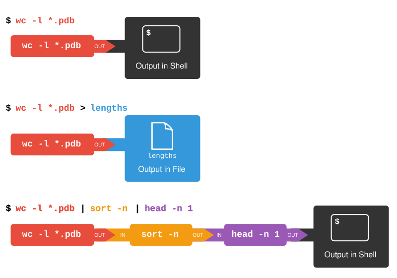

Pipes and Filters
Episode 4
- Explain the advantage of linking commands with pipes and filters.
- Combine sequences of commands to get new output
- Redirect a command’s output to a file.
- Explain what usually happens if a program or pipeline isn’t given any input to process.
- How can I combine existing commands to produce a desired output?
- How can I show only part of the output?
Now that we know a few basic commands, we can finally look at the shell’s most powerful feature: the ease with which it lets us combine existing programs in new ways. We’ll start with the directory shell-lesson-data/exercise-data/alkanes that contains six files describing some simple organic molecules. The .pdb extension indicates that these files are in Protein Data Bank format, a simple text format that specifies the type and position of each atom in the molecule.
Let’s run an example command:
wc is the ‘word count’ command: it counts the number of lines, words, and characters in files (returning the values in that order from left to right).
If we run the command wc *.pdb, the * in *.pdb matches zero or more characters, so the shell turns *.pdb into a list of all .pdb files in the current directory:
Note that wc *.pdb also shows the total number of all lines in the last line of the output.
If we run wc -l instead of just wc, the output shows only the number of lines per file:
The -m and -w options can also be used with the wc command to show only the number of characters or the number of words, respectively.
Why Isn’t It Doing Anything?
What happens if a command is supposed to process a file, but we don’t give it a filename? For example, what if we type:
but don’t type *.pdb (or anything else) after the command? Since it doesn’t have any filenames, wc assumes it is supposed to process input given at the command prompt, so it just sits there and waits for us to give it some data interactively. From the outside, though, all we see is it sitting there, and the command doesn’t appear to do anything.
If you make this kind of mistake, you can escape out of this state by holding down the control key (Ctrl) and pressing the letter C once: Ctrl+C. Then release both keys.
Capturing output from commands
Which of these files contains the fewest lines? It’s an easy question to answer when there are only six files, but what if there were 6000? Our first step toward a solution is to run the command:
The greater than symbol, >, tells the shell to redirect the command’s output to a file instead of printing it to the screen. This command prints no screen output, because everything that wc would have printed has gone into the file lengths.txt instead. If the file doesn’t exist prior to issuing the command, the shell will create the file. If the file exists already, it will be silently overwritten, which may lead to data loss. Thus, redirect commands require caution.
ls lengths.txt confirms that the file exists:
We can now send the content of lengths.txt to the screen using cat lengths.txt. The cat command gets its name from ‘concatenate’ i.e. join together, and it prints the contents of files one after another. There’s only one file in this case, so cat just shows us what it contains:
Output Page by Page
We’ll continue to use cat in this lesson, for convenience and consistency, but it has the disadvantage that it always dumps the whole file onto your screen. More useful in practice is the command less (e.g. less lengths.txt). This displays a screenful of the file, and then stops. You can go forward one screenful by pressing the spacebar, or back one by pressing b. Press q to quit.
Filtering output
Next we’ll use the sort command to sort the contents of the lengths.txt file. But first we’ll do an exercise to learn a little about the sort command:
What Does sort -n Do?
The file shell-lesson-data/exercise-data/numbers.txt contains the following lines:
If we run sort on this file, the output is:
If we run sort -n on the same file, we get this instead:
Explain why -n has this effect.
Solution
The -n option specifies a numerical rather than an alphanumerical sort.
We will also use the -n option to specify that the sort is numerical instead of alphanumerical. This does not change the file; instead, it sends the sorted result to the screen:
We can put the sorted list of lines in another temporary file called sorted-lengths.txt by putting > sorted-lengths.txt after the command, just as we used > lengths.txt to put the output of wc into lengths.txt. Once we’ve done that, we can run another command called head to get the first few lines in sorted-lengths.txt:
Using -n 1 with head tells it that we only want the first line of the file; -n 20 would get the first 20, and so on. Since sorted-lengths.txt contains the lengths of our files ordered from least to greatest, the output of head must be the file with the fewest lines.
Redirecting to the same file
It’s a very bad idea to try redirecting the output of a command that operates on a file to the same file. For example:
Doing something like this may give you incorrect results and/or delete the contents of lengths.txt.
What Does >> Mean?
We have seen the use of >, but there is a similar operator >> which works slightly differently. We’ll learn about the differences between these two operators by printing some strings. We can use the echo command to print strings e.g.
Now test the commands below to reveal the difference between the two operators:
and:
Hint: Try executing each command twice in a row and then examining the output files.
Solution
In the first example with >, the string ‘hello’ is written to testfile01.txt, but the file gets overwritten each time we run the command.
We see from the second example that the >> operator also writes ‘hello’ to a file (in this case testfile02.txt), but appends the string to the file if it already exists (i.e. when we run it for the second time).
Appending Data
We have already met the head command, which prints lines from the start of a file. tail is similar, but prints lines from the end of a file instead.
Consider the file shell-lesson-data/exercise-data/animal-counts/animals.csv. After these commands, select the answer that corresponds to the file animals-subset.csv:
- The first three lines of
animals.csv - The last two lines of
animals.csv - The first three lines and the last two lines of
animals.csv - The second and third lines of
animals.csv
Solution
Option 3 is correct. For option 1 to be correct we would only run the head command. For option 2 to be correct we would only run the tail command. For option 4 to be correct we would have to pipe the output of head into tail -n 2 by doing head -n 3 animals.csv | tail -n 2 > animals-subset.csv
Passing output to another command
In our example of finding the file with the fewest lines, we are using two intermediate files lengths.txt and sorted-lengths.txt to store output. This is a confusing way to work because even once you understand what wc, sort, and head do, those intermediate files make it hard to follow what’s going on. We can make it easier to understand by running sort and head together:
The vertical bar, |, between the two commands is called a pipe. It tells the shell that we want to use the output of the command on the left as the input to the command on the right.
This has removed the need for the sorted-lengths.txt file.
Combining multiple commands
Nothing prevents us from chaining pipes consecutively. We can for example send the output of wc directly to sort, and then send the resulting output to head. This removes the need for any intermediate files.
We’ll start by using a pipe to send the output of wc to sort:
We can then send that output through another pipe, to head, so that the full pipeline becomes:
This is exactly like a mathematician nesting functions like log(3x) and saying ‘the log of three times x’. In our case, the algorithm is ‘head of sort of line count of *.pdb’.
The redirection and pipes used in the last few commands are illustrated below:

lengths" will direct output to the file"lengths". "wc -l *.pdb | sort -n | head -n 1" will build a pipeline where the output of the "wc" command is the input to the "sort" command, the output of the "sort" command is the input to the "head" command and the output of the"head" command is directed to the shell">Piping Commands Together
In our current directory, we want to find the 3 files which have the least number of lines. Which command listed below would work?
wc -l * > sort -n > head -n 3wc -l * | sort -n | head -n 1-3wc -l * | head -n 3 | sort -nwc -l * | sort -n | head -n 3
Solution
Option 4 is the solution. The pipe character | is used to connect the output from one command to the input of another. > is used to redirect standard output to a file. Try it in the shell-lesson-data/exercise-data/alkanes directory!
Tools designed to work together
This idea of linking programs together is why Unix has been so successful. Instead of creating enormous programs that try to do many different things, Unix programmers focus on creating lots of simple tools that each do one job well, and that work well with each other. This programming model is called ‘pipes and filters’. We’ve already seen pipes; a filter is a program like wc or sort that transforms a stream of input into a stream of output. Almost all of the standard Unix tools can work this way. Unless told to do otherwise, they read from standard input, do something with what they’ve read, and write to standard output.
The key is that any program that reads lines of text from standard input and writes lines of text to standard output can be combined with every other program that behaves this way as well. You can and should write your programs this way so that you and other people can put those programs into pipes to multiply their power.
Pipe Reading Comprehension
A file called animals.csv (in the shell-lesson-data/exercise-data/animal-counts folder) contains the following data:
What text passes through each of the pipes and the final redirect in the pipeline below? Note, the sort -r command sorts in reverse order.
Hint: build the pipeline up one command at a time to test your understanding
Solution
The head command extracts the first 5 lines from animals.csv. Then, the last 3 lines are extracted from the previous 5 by using the tail command. With the sort -r command those 3 lines are sorted in reverse order. Finally, the output is redirected to a file: final.txt. The content of this file can be checked by executing cat final.txt. The file should contain the following lines:
Pipe Construction
For the file animals.csv from the previous exercise, consider the following command:
The cut command is used to select or ‘cut out’ certain sections of each line in the file for further processing while leaving the original file unchanged. By default, cut expects the lines to be separated into columns by a Tab character. A character used in this way is called a delimiter.
In the example above we use the -d option to specify the comma as our delimiter character instead of Tab. We have also used the -f option to specify that we want to extract the second field (column). This gives the following output:
The uniq command filters out adjacent matching lines in a file. How could you extend this pipeline (using uniq and another command) to find out what animals the file contains (without any duplicates in their names)?
Which Pipe?
The file animals.csv contains 8 lines of data formatted as follows:
The uniq command has a -c option which gives a count of the number of times a line occurs in its input. Assuming your current directory is shell-lesson-data/exercise-data/animal-counts, what command would you use to produce a table that shows how many times each type of animal appears in the file?
sort animals.csv | uniq -csort -t, -k2,2 animals.csv | uniq -ccut -d, -f 2 animals.csv | uniq -ccut -d, -f 2 animals.csv | sort | uniq -ccut -d, -f 2 animals.csv | sort | uniq -c | wc -l
Solution
Option 4 is the correct answer. If you have difficulty understanding why, try running the commands, or sub-sections of the pipelines (make sure you are in the shell-lesson-data/exercise-data/animal-counts directory).
Nelle’s Pipeline: Checking Files
Nelle has run her samples through the assay machines and created 17 files in the north-pacific-gyre directory described earlier. As a quick check, starting from the shell-lesson-data directory, Nelle types:
The output is 18 lines that look like this:
Now she types this:
Whoops: one of the files is 60 lines shorter than the others. When she goes back and checks it, she sees that she did that assay at 8:00 on a Monday morning — someone was probably in using the machine on the weekend, and she forgot to reset it. Before re-running that sample, she checks to see if any files have too much data:
Those numbers look good — but what’s that ‘Z’ doing there in the third-to-last line? All of her samples should be marked ‘A’ or ‘B’; by convention, her lab uses ‘Z’ to indicate samples with missing information. To find others like it, she does this:
Sure enough, when she checks the log on her laptop, there’s no depth recorded for either of those samples. Since it’s too late to get the information any other way, she must exclude those two files from her analysis. She could delete them using rm, but there are actually some analyses she might do later where depth doesn’t matter, so instead, she’ll have to be careful later on to select files using the wildcard expressions NENE*A.txt NENE*B.txt.
Removing Unneeded Files
Suppose you want to delete your processed data files, and only keep your raw files and processing script to save storage. The raw files end in .dat and the processed files end in .txt. Which of the following would remove all the processed data files, and only the processed data files?
rm ?.txtrm *.txtrm * .txtrm *.*
Solution
- This would remove
.txtfiles with one-character names - This is the correct answer
- The shell would expand
*to match everything in the current directory, so the command would try to remove all matched files and an additional file called.txt - The shell expands
*.*to match all filenames containing at least one., including the processed files (.txt) and raw files (.dat)
wccounts lines, words, and characters in its inputs.catdisplays the contents of its inputs.sortsorts its inputs.headdisplays the first 10 lines of its input by default without additional arguments.taildisplays the last 10 lines of its input by default without additional arguments.command > [file]redirects a command’s output to a file (overwriting any existing content).command >> [file]appends a command’s output to a file.[first] | [second]is a pipeline: the output of the first command is used as the input to the second.- The best way to use the shell is to use pipes to combine simple single-purpose programs (filters).